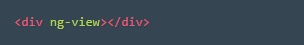
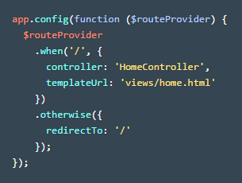

So far we've made AngularJS apps that display data in a single view index.html.
But what happens when the app grows and needs to display more information? Stuffing more code to a single view will quickly make things messy.
A better solution is to use multiple templates that display different pieces of data based on the URL that the user is visiting. We can do this with Angular's application routes.
instructions:
1.In index.html under the .header section, type in the code exactly as you see here:

2.View the AngularJS app in the browser by typing http://localhost:8000/
3. In app.js under the angular.module, type in this code:

Great! A gallery of images shows up. How does it work?
1.In
app.js inside the
method, we use Angular's
$routeProvider to define the application routes.
2.We used
.when() to map the URL
/ to to the controller
HomeController and the template
home.html.
The
HomeController uses the service
js/services/photos.js to fetch the array of all photos from
https://s3.amazonaws.com/codecademy-content/courses/ltp4/photos-api/photos.json
and stores it into
$scope.photos. The
home.html uses
ng-repeat to loop through each item in the
photos array and display each photo.
3.Otherwise if a user accidentally visits a URL other than
/, we just redirect to
/ using
.otherwise()
4.Now when a user visits
/, a view will be constructed by injecting
home.html into the
in index.html.
 フ ｫ ト フ ｫ ト
フ ｫ ト フ ｫ ト